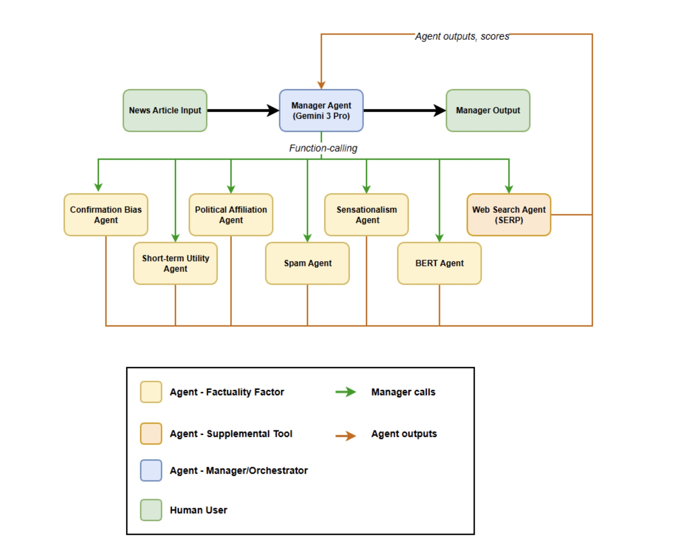
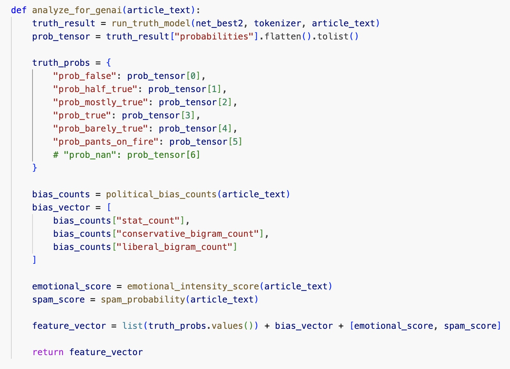
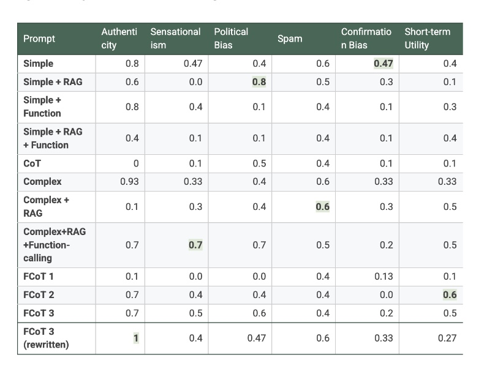

Introduction
Elevator Pitch
Goal: In a world of misinformation, it is easy for citizens desiring to be informed to be easily led astray. Our goal is to basically create a tool that does most of the work in letting users identify the veracity news article they are reading.
Why It Matters: In today’s information age, voters and political leaders heavily base their decisions off of the news. Thus, helping our target audience identify the truthfulness of their news helps them make more accurate decisions, and preventing the spread of inflammatory rumors.
Problem Statement + Users/Stakeholders Concerned
Problem Statement: The problem is that there is a vast amount of misinformation spread throughout various channels of media, and users need a tool that quickly and accurately helps them verify the article on a variety of factors.
Users/Stakeholders Concerned: The primary users/stakeholders in this project are politicians, political theorists, voters, and on a general note informed citizens of any nation.
Methods

General Approach:
After the user inputs the article, a manager agent driven by the Gemini LLM, coordinates multiple worker agents to derive specific metrics/insights from the text, then the manager agent makes a final classification + report on the text itself based on the worker agents’ results.
Scope:
There is a relatively large amount of factuality factors, or abstract concepts, to evaluate the veracity of a news article against. However, for this project, our scope is limited to 6 factuality factors.
Factuality Factors (Collapsible)
Factuality Factor 1: Authenticity
Authenticity involves cross referencing and validation of the article’s truthfulness.
Method: We built a worker agent that integrates a search engine API to search the input across the internet, and cross-reference the content with other articles across the internet.
Factuality Factor 2: Sensationalism
Sensationalism involves quantifying the emotional intensity of the article, i.e. amount of inflammatory remarks/statements made, hyperboles, and more intense forms of expression.
Method: We built the worker agent upon a Vader Sentiment Analyzer, a Python module that scores text on its emotional intensity.
Factuality Factor 3: Political Bias
Does the article overly lean to a particular location on the political spectrum? To be more specific, does the article indicate signs of a double standard for one political side as opposed to another?
Method: We compiled a list of popular phrases spoken on the floors of the Senate and House of Representatives along with the political party of the speaker who said the phrase, and check if the input has matches. We also check the amount of statistics the article uses through searching the article itself for statistics used.
Factuality Factor 4: Spam
Spam involves the detection of high-volume words, phrases, or content in general within an article to drive user engagement and click counts on the internet.
Method: We used an existing tool from hugging face that recognizes spam messages to return a score between 0 and 1 of how much “spam” the article employs.
Factuality Factor 5: Confirmation Bias
Confirmation bias involves multiple factors, such as checking if the article only supports one viewpoint, ignoring other viewpoints and denying evidence for such viewpoints. It also involves where complex issues are reduced to binary choices to reaffirm the target audience’s beliefs.
Method: We explicitly ask the LLM to analyze the article itself through the prompt, and determine this factor.
Factuality Factor 6: Short-Term Utility
Is the content optimized for just immediate shareability as opposed to depth or accuracy? Basically, we are checking if the content is written for virality as opposed to informing the audience.
Method: We explicitly ask the LLM to analyze the article itself through the prompt, and determine this factor.
Factuality Factor 7: BERT/Sentence Transformers
BERT stands for Bidirectional Encoder Representations from Transformers. Essentially, it is a model that learns the meaning of words based on the words’ context in a sentence. Now, think of sentence transformers as modified BERT models that understand sentences as a whole, not just words.
Method: A software tool, MXNet, was used to generate numerical representations of text, then used a BERT model to classify the text into one of the truth categories.
Datasets:
Our initial testing dataset was the LIAR-Plus dataset, a dataset of statements and their truth label along with metadata like political affiliation, and the state the speaker is from. This was used to train the BERT model.
Our final dataset was a self-curated dataset of various news articles, where we self-scored each article on each factuality factor. This was used to test the agentic classifier, and generate our final results table.
Previous Iterations

Our initial iteration ran all of the predictive functions at once, and then fed it to an LLM. Switching to an Agentic Structure allows for greater adaptability and scalability.
Future Considerations
We would like to work with more factuality factors, specifically Psychology Utility or analyzing if the author is manipulating the audience with psychological methods. We also would like to add a larger RAG database.
Instructions
How to use the application:
- Take any text, and paste it into the text box under “Input Article”.
- Click the button “Run Analysis”.
- Soon, your results will display under Manager Verdict, on the right side of the screen.
How to Interpret The Results
After your input processes, you will see a section called manager verdict. This gives the truth category of your article, plus a paragraph explaining the reasoning behind the classification.
Below, in the table, each factor is scored, and has a concise sentence to explain the score.
Then, at the bottom right of the page, there is a JSON block, where the raw metrics from the worker agents are provided. Below is a more detailed description:
Metric Definitions (JSON Block Breakdown)
- “bert”: Refers to the BERT scores; within it is each truth category and the probability that the input text falls into the respective category.
- “stat_entity_count”: Refers to the amount of statistics provided by the input.
- “conservative_bigrams” and “liberal_bigrams”: Refer to the number of matches to the conservative and liberal bigram data, respectively.
- “emotional intensity”: Refers to the Vader intensity score from -1 to 1, where -1 is very negative, 0 is neutral, and 1 is very positive.
- “spam_probability”: Refers to the score from the Hugging Face tool, from 0 to 1, where 0 is no spam and 1 being almost entirely spam.
Results

Definition of Key Terms in the Results Plot
- RAG: Retrieval Augmented Generation is a framework that references information from a database for an LLM to use.
- Function/Function Calling: It is a technique that allows the LLM to use external APIs and functions through generated JSON representation.
- CoT: Chain of Thought, or CoT, is when the model explains its reasoning process to the user.
- FCoT: Fractal Chain of Thought is when the model’s reasoning is forced to be recursive and corrective.
- Simple: A basic prompt that allows the framework to analyze the text.
- Complex: A highly detailed prompt, as compared to simple.
This is our table of results, where each row represents a different type of prompt used and each column represents the individual factuality factor. Each entry represents the accuracy achieved on that specific factuality factor with the prompt. Note the test dataset was a self-labeled dataset of various news articles.
The baseline accuracy we hoped to achieve was getting at least 0.4 on a factuality factor. Amongst our high scores, none of them are below 0.4. If we compare all the prompts, on average, the best performing prompt is, on average, Complex + RAG + Function Calling and the worst was FCoT 1.
Implications, Deployment Considerations, & Next Steps
This product is vital in shaping how citizens make decisions, whether they are voters, politicians, or anyone else. If this product is not accurate or misleading itself, it could further instigate and drive false information across communities and nations.
When deploying the project, we need to consider things like API costs, disclaimer statements, and a way for users to report anomalies found.
The next steps would be to get legal advice from a professional on this classifier, and after promote this through popular forums and news websites. Another step would be to get feedback from at least 1000 users on the website itself before a full rollout.
Contributions and Citations
Contributions
What We Built:
Agentic Infrastructure with Google ADK, Manager Agent + Prompt, Political Bias Agent, Sensationalism Agent, custom BERT model, Web Search Agent, Gradio Webpage.
What Was Reused:
Base BERT model, RapidFuzz for bigram matching/processing, VADER Sentiment Analyzer, MXnet for text embeddings.
Citations
Textbooks and Academic Papers
Arsanjani, Ali. "Misinformation Detection Ranking and Mitigation." (Textbook).
Wang, William Yang. "“liar, liar pants on fire”: A new benchmark dataset for fake news detection." Proceedings of the 55th annual meeting of the association for computational linguistics (volume 2: short papers). 2017.
Tariq Alhindi, Savvas Petridis, and Smaranda Muresan. "Where is Your Evidence: Improving Fact-checking by Justification Modeling." In Proceedings of the First Workshop on Fact Extraction and VERification (FEVER), pages 85–90, Brussels, Belgium. 2018. Association for Computational Linguistics.
Models and Core AI Components
BERT Base Model: Devlin, Jacob, et al. "BERT: Pre-training of Deep Bidirectional Transformers for Language Understanding." Google Research, 2018, arXiv:1810.04805. BERT-base-uncased.
SMS Spam Detection Model: "mrm8488/bert-tiny-finetuned-sms-spam-detection." Hugging Face, 2020, https://huggingface.co/mrm8488/bert-tiny-finetuned-sms-spam-detection.
Gemini Models (Flash & Pro): Google. Gemini 3 Flash & Pro Preview. Google AI, 2024, https://gemini.google.com.
VADER Sentiment Analysis: Hutto, Clayton J., and Eric Gilbert. "VADER: A Parsimonious Rule-Based Model for Sentiment Analysis of Social Media Text." Proceedings of the Eighth International AAAI Conference on Weblogs and Social Media, 2014, pp. 216-25.
NLP and Software Libraries
spaCy (en_core_web_md): Honnibal, Matthew, and Ines Montani. spaCy: Industrial-strength Natural Language Processing in Python. Version 3.x, Explosion AI, 2020, https://spacy.io.
Gradio UI: Abid, Abubakar, et al. "Gradio: Hassle-Free Shareable UI Components for Your Machine Learning Model." arXiv, 2019, https://gradio.app.
RapidFuzz: "RapidFuzz: Rapid Fuzzy String Matching in Python and C++." GitHub, 2024, https://github.com/rapidfuzz/RapidFuzz.